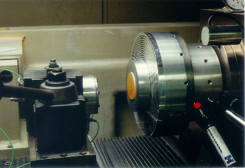
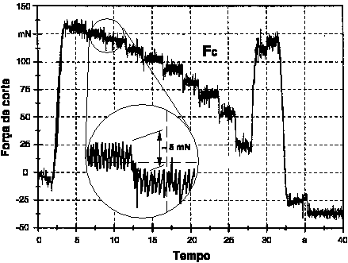

LMP>Linhas de Pesquisa>USIPREC>Medição e Análise de Forças na Usinagem de Ultraprecisão
INTRODUÇÃOApesar dos grandes progressos atingidos nos últimos anos na tecnologia de usinagem de ultraprecisão, ainda faltam conhecimentos sobre o mecanismo de corte e sobre as condições de corte ótimas durante a usinagem com ferramentas de diamante monocristalino. As propriedades do material da peça e sua orientação e estrutura cristalina, a geometria e propriedades do material da ferramenta, as propriedades do fluido de corte e o comportamento estático, dinâmico e térmico da máquina-ferramenta têm um importante papel neste processo. Estes parâmetros interagem com as tensões, forças e temperaturas, de forma que estes têm, direta ou indiretamente, influência sobre a qualidade final da peça. Uma ferramenta útil e essencial na compreensão dos fenômenos que ocorrem na usinagem é entre outras, portanto, a análise das componentes de força que ocorrem durante este processo de fabricação. OBJETIVOSCom este trabalho objetiva-se um maior conhecimento da influência de diferentes variáveis de trabalho sobre as componentes de força durante a usinagem de ultraprecisão, com um sistema especialmente projetado e construído para a medição destas forças. Este sistema permite a medição de forças de corte e passivas muito pequenas, em níveis muito inferiores a 100 mN. PROCEDIMENTOSO comportamento das forças de corte e passivas com a variação dos diferentes parâmetros de usinagem e variáveis de trabalho é sistematicamente analisado a partir de variações do avanço, da profundidade de corte, de parâmetros geométricos da ferramenta de diamante e de outras variáveis de processo de importância. Para isto, são realizados ensaios de usinagem em cristais infravermelhos (sulfeto de zinco, Cleartran™ e germânio) e materiais metálicos (ligas de cobre e de alumínio) com ferramentas de diamante sob diferentes condições de trabalho e é analisado o comportamento das componentes de força.  RESULTADOSOs resultados obtidos mostram que o sistema de medição de forças na usinagem de ultraprecisão tem sensibilidade suficiente para uma análise detalhada da influência dos parâmetros de usinagem característicos em operações de usinagem de ultraprecisão. Com base nos resultados obtidos, podem ser determinados os parâmetros mais adequados à produção de elementos ópticos em cada um dos materiais ensaiados e analisada a influência que as variáveis de processo têm sobre o resultado. 
|
| Contato:
USIPREC Rolf Bertrand Schroeter Prof. Dr. Eng. |
Última Atualização 21.06.2006 |
{kind=link}